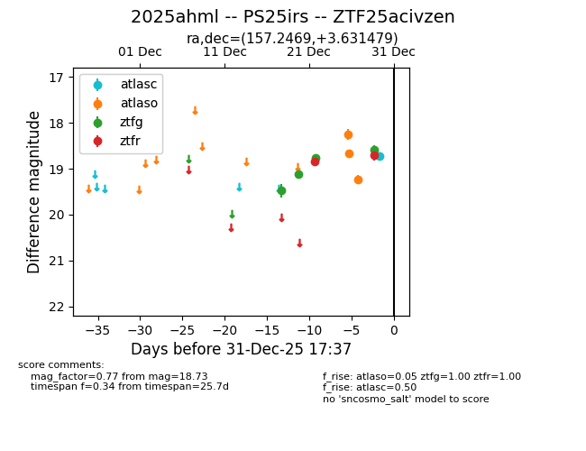
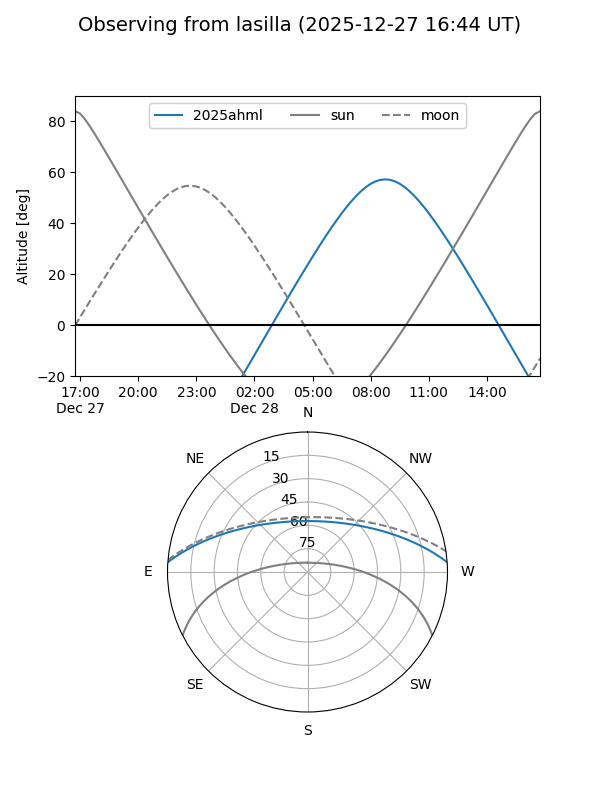
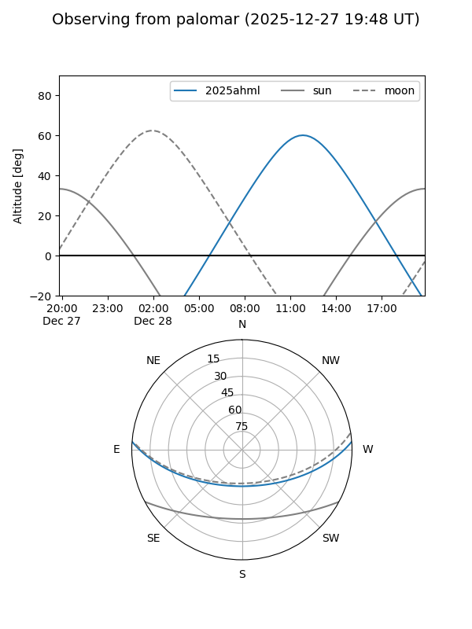
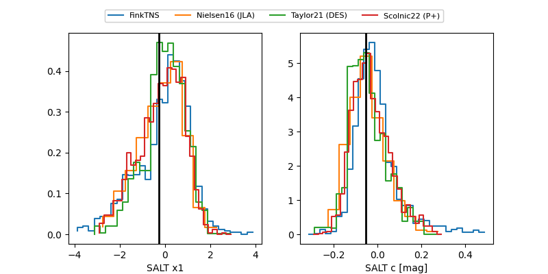

2025ahml
Target 2025ahml at 2025-12-31 17:00
Aliases and brokers:
FINK:
Lasair:
ALeRCE:
TNS:
YSE:
alt names
ZTF25acivzen (ztf,fink_ztf)
2025ahml (tns,yse)
PS25irs (panstarrs)
Coordinates:
equatorial (ra, dec) = 157.2469,+3.63148
equatorial (HMS+DMS) = 10:28:59.25,+03:37:53.32
galactic (l, b) = (241.2838,+48.67402)
Flags:
Photometry:
last atlasc=18.73, atlaso=19.23, ztfg=18.60, ztfr=18.70
1 atlasc, 4 atlaso, 4 ztfg, 2 ztfr detections
Lightcurve

Visibility


Additional plots
